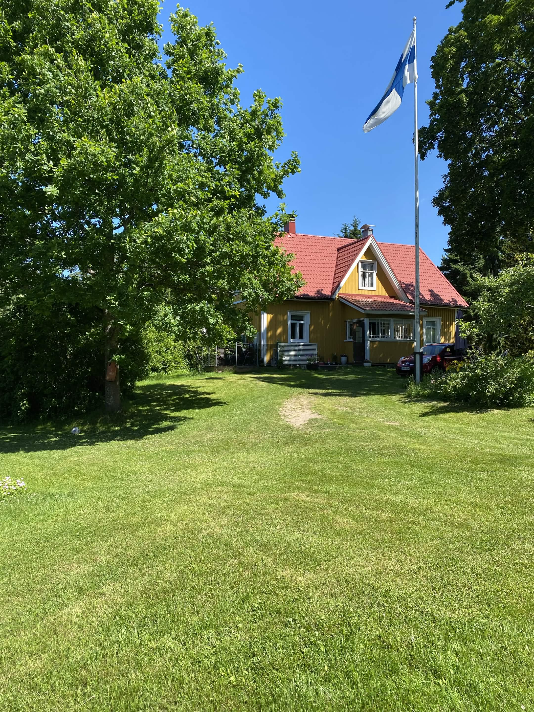

Tietoa ja historiaa
Keskitalolla on pitkä historia, joka ylettyy vuodelle 1921. Pihan maisemat ovat vaihtuneet useaan otteeseen. Ala-piha oli aluksi vain peltoa kunnes pellon tilalle istutettiin metsää. Nykyään metsästä on osa kaadettu ja tilalle kaivettu uimakelpoinen lampi. Vanhan saunan tilalle rakennettiin täysin uusi saunarakennus, viimeisimpinä lisäyksinä palju ja uusi terassi ovat saaneet paikkansa saunalla.
Kuva keskitalosta kesän kauneudessa
